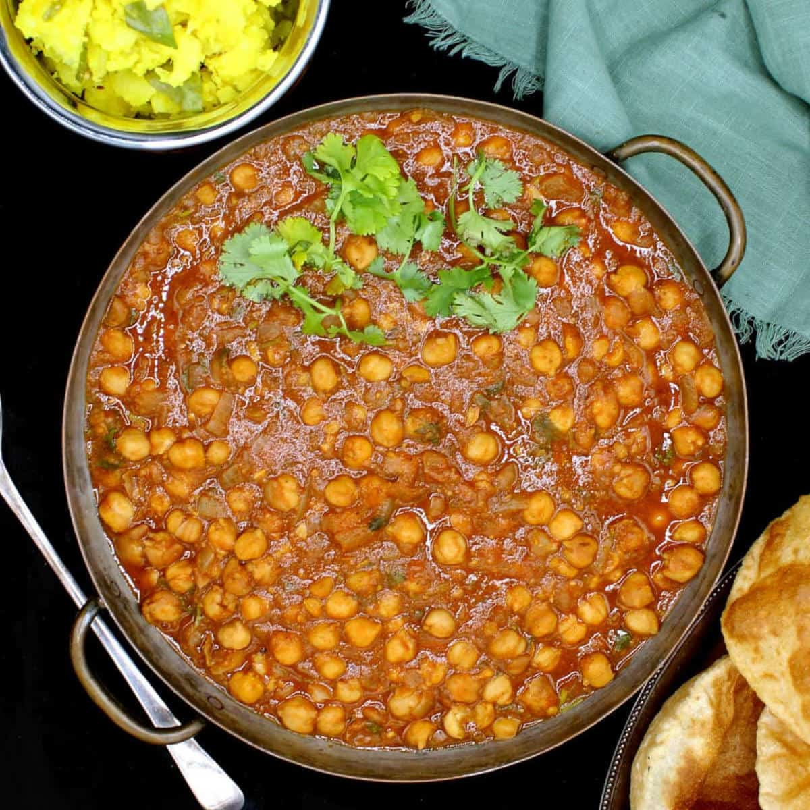
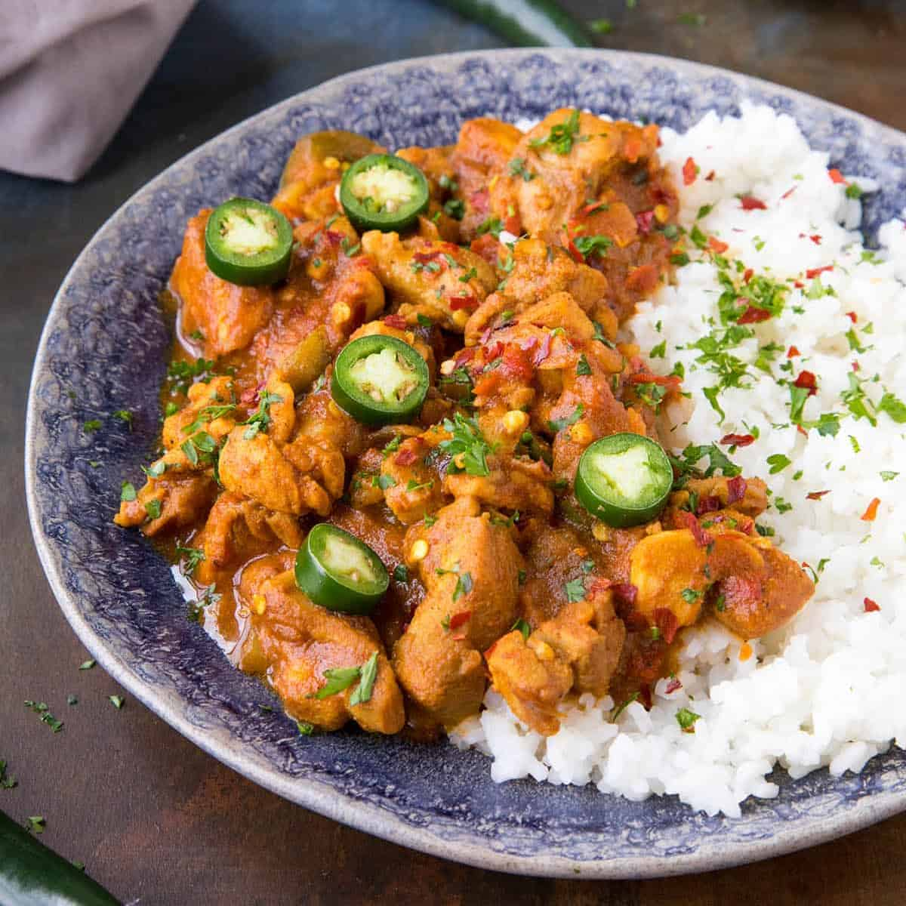

Pakora is a crispy fritter originating from India. It consists of ingredients
like
vegetables such as potatoes and onions, coated in seasoned gram flour batter & spices & then deep fried.

Chaat is an Indian dish that usually a type of fried dough with ingredients such
as gram, chickpeas and spicies that typically create a spicy, tangy, or salty
flavour, though some chaat are sweet.
Masala dosa is an Indian dish that is like a thin pancake/crepe that is made
from fermented batter of ground black lentils and rice. Usually filled with potatoes, fried onions and spices.
Sambar

Sambar is an Indian vegtable and lentil stew that is made from pigeon pea
lentils, tamarind and a spice mixture.
Dal Makhani

Dal Makhani is an Indian dish that is made from black lentils, red kidney beans,
spices, butter and cream.
Chana Masala

Chana Masala is an Indian dish that is made from chickpeas that is made in a
onion tomato gravy usually served with rice.
Tandoori Chicken

Tandoori chicken is an Indian chicken dish that is marinated in yogurt and
spices and roasted in the oven.
Vindaloo

Vindaloo is an Indian curry dish which is very hot made from meat, rice,
spicies, tamarind, and garlic.
Biriyani

Biriyani is an Indian dish that is made from a mixture of meats that are covered
in spicies and rice.
Previous Page | Next Page